Fonte: gare di altri paesi/India/chimica/NSEC_2024_Question.pdf · Apri PDF · apri PDF p.1
Cluster: Meccanica
Soluzioni (stessa cartella): · · · · · · · · · · · · · ·
Problema 1
A closed vessel with rigid walls contains 1.0 mol of component M (vapour pressure ): 0.9 mol liquid and 0.1 mol vapor. 0.1 mol of component N (vapour pressure ) is added slowly to maintain equilibrium conditions. Assume M and N form an ideal solution. The total pressure at the end of the addition will:
(a) decrease if (b) decrease irrespective of relation between and (c) increase if (d) increase irrespective of relation between and
Topic: Thermodynamics, Fluid Mechanics Metodi: Ideal Gas Law, Physical Modeling Competenze: Physical Reasoning Fonte: Testo (PDF) — p.3
Problema 2
A scuba diver accidentally surfaces from a depth of 100 feet in water (pressure = 4 atm). The solubility of nitrogen from air (78% in air) in water in standard conditions is 15 mg L at 37°C. The volume of gas released into the bloodstream of the diver from each litre of blood is: (Assume blood to behave similarly as water)
(a) 14 mL (b) 41 mL (c) 55 mL (d) 12 mL
Topic: Fluid Mechanics, Thermodynamics Metodi: Ideal Gas Law, Physical Modeling Competenze: Physical Reasoning, Mathematical Modeling Fonte: Testo (PDF) — p.3
Problema 3
A 35 degree drop in temperature from 25°C causes a 8.2-fold decrease in the rate of a first order reaction. If the half-life of the reaction is 3.2 h, what will be the half-life at a temperature of 10°C?
(a) 12.8 h (b) 19.8 h (c) 26.2 h (d) 23.4 min
Topic: Thermodynamics, Kinetic Theory Metodi: Physical Modeling, Approximation & Series Expansion Competenze: Mathematical Modeling, Physical Reasoning Fonte: Testo (PDF) — p.3
Problema 4
An ideal-gas reaction equilibrium is represented as . Considering the fact that all components are ideal and that only A and B are present initially, which of the following options is ALWAYS true at equilibrium? '' is the number of moles of the species.
(a) (b) (c) (d)
Topic: Thermodynamics, Kinetic Theory Metodi: Ideal Gas Law, Physical Modeling Competenze: Physical Reasoning, Mathematical Modeling Fonte: Testo (PDF) — p.3
Problema 5
Which of the following statements is correct?
(a) The addition of neon to a gas-phase reaction mixture at equilibrium at constant and constant does not alter the equilibrium. (b) For a reversible reaction in a closed system with constant and constant if , the reaction proceeds in the reverse direction. Here '' is the extent of the reaction. (c) Complete dissociation of a weak electrolyte takes place in the limit of infinite dilution in aqueous solution. (d) The standard state of a species is always a pure substance.
Topic: Thermodynamics Metodi: First Law of Thermodynamics, Physical Modeling Competenze: Physical Reasoning Fonte: Testo (PDF) — p.3
Problema 6
Consider the following statements about the given mechanism:
(i) The overall reaction is (ii) A is a catalyst and B is a reactant. (iii) C and F are intermediates. (iv) D and G are products.
The correct set of statements is
(a) (i) and (ii) only (b) (iii) and (iv) only (c) (ii), (iii) and (iv) only (d) All (i), (ii), (iii) and (iv)
Topic: Thermodynamics, Kinetic Theory Metodi: Physical Modeling, Conservation Laws Competenze: Physical Reasoning Fonte: Testo (PDF) — p.3
Problema 7
For one mole of a van der Waals gas with , the plot of versus at 298 K gives an intercept of 24.4 L atm mol and slope of L atm mol. The value of the van der Waals constant is
(a) 12.5 L atm mol (b) 5.0 L atm mol (c) 4.5 L atm mol (d) 2.5 L atm mol
Topic: Thermodynamics, Kinetic Theory Metodi: Ideal Gas Law, Physical Modeling Competenze: Mathematical Modeling, Physical Reasoning Fonte: Testo (PDF) — p.4
Problema 8
The following three plots show the variation of conductance with mL of titrant added for three titrations of aqueous solutions of , , .
Given: Molar ionic conductivities in S cm mol are:
| 127.3 | 76.4 | 50.1 | 160 | 73.6 |
| Titration | Analyte | Titrant |
|---|---|---|
| A | ||
| B | ||
| C |
Assign the plots to the respective titrations
(a) I-A, II–B, III-C (b) I-B, II–C, III-A (c) I-C, II–A, III-B (d) I-B, II–A, III-C
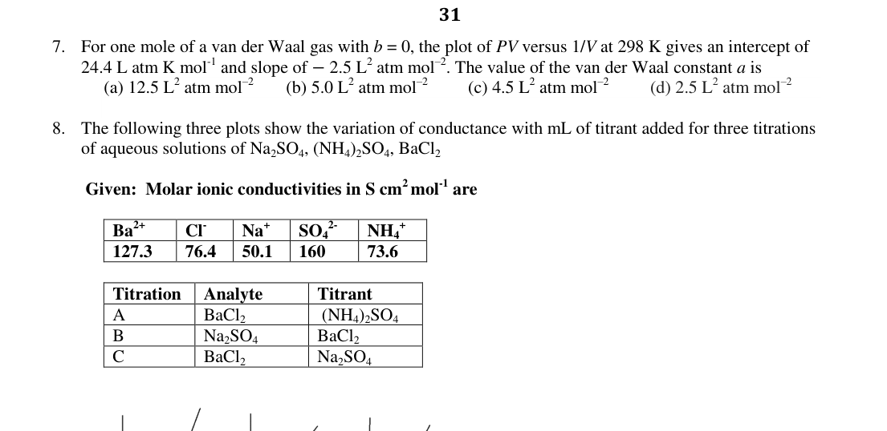
Conductance vs titrant volume plots I II IIITopic: Electrostatics, Circuits Metodi: Experimental Data Analysis, Physical Modeling Competenze: Graph Linearization, Physical Reasoning Fonte: Testo (PDF) — p.4
Problema 9
150 g of liquid water at 20°C is mixed with 40 g of ice at 0°C in a coffee cup calorimeter. The final temperature (in °C) reached will be (assuming no heat loss or gain by the surroundings)
Latent heat of ice = 334.72 J/g Specific heat of water = 4.2 J/g °C
(a) 1.35 (b) 1.35 (c) 0 (d) 4
Topic: Thermodynamics Metodi: First Law of Thermodynamics, Conservation of Energy Competenze: Mathematical Modeling, Physical Reasoning Fonte: Testo (PDF) — p.4
Problema 10
A chemical reaction, has following mechanism:
\mathrm{X_{(g)} + S_{(s)} \underset{k_2}^{k_1} [XS]_{(s)}} \mathrm{[XS]_{(s)} + Y_{(g)} \underset{k_4}^{k_3} Z_{(g)} + S_{(s)}}
[where (S) is solid catalyst]
The overall equilibrium constant for above reaction can be represented as
(a) (b) (c) (d)
Topic: Thermodynamics, Kinetic Theory Metodi: Physical Modeling, Conservation Laws Competenze: Mathematical Modeling, Physical Reasoning Fonte: Testo (PDF) — p.4
Problema 11
Given below is a galvanic cell
The possible condition for the galvanic cell to develop emf of 0.5 V is:
[Given: and ]
(a) and (b) and (c) and (d) and
Topic: Electrostatics, Circuits Metodi: Electric Potential Method, Physical Modeling Competenze: Mathematical Modeling, Physical Reasoning Fonte: Testo (PDF) — p.4
Problema 12
If 5 A current is passed for an hour through one dm of 0.5 M aqueous solution of sodium acetate, then the amount of ethane produced will be:
(a) 2.79 g (b) 4.2 g (c) 1.39 g (d) 5.58 g
Topic: Electrostatics, Circuits Metodi: Physical Modeling, Conservation Laws Competenze: Mathematical Modeling, Physical Reasoning Fonte: Testo (PDF) — p.4
Problema 13
The results obtained when the finely divided metal powders of P, Q, R and S are added to the aqueous solutions of different metal nitrates are given below:
| Metal | Silver Nitrate | Lead Nitrate | Nickel Nitrate | Zinc Nitrate |
|---|---|---|---|---|
| P | ✓ | ✓ | ✓ | ✗ |
| Q | ✓ | ✓ | ✓ | ✓ |
| R | ✓ | ✓ | ✗ | ✗ |
| S | ✓ | ✗ | ✗ | ✗ |
Displacement = ✓, No reaction = ✗
[Given: , , , ]
If these elements are to be arranged as per their positions in the electrochemical series, then which of the following will represent the above set of observations?
(a) P > Q > R > S (b) S > R > P > Q (c) Q > P > R > S (d) S > R > Q > P
Topic: Electrostatics, Circuits Metodi: Electric Potential Method, Physical Modeling Competenze: Physical Reasoning, Diagrammatic Reasoning Fonte: Testo (PDF) — p.5
Problema 14
The molarity of the commercially available concentrated sulphuric acid solution with label on the bottle is as shown below:
Sulphuric Acid , FW 98.00 Assay as : 95% w/w Density: 1.84 g/cm Heavy metal ions: Negligible Anions: Negligible
(a) 19.38 M (b) 17.83 M (c) 20.77 M (d) 18.34 M
Topic: Thermodynamics, Kinetic Theory Metodi: Dimensional Analysis, Physical Modeling Competenze: Mathematical Modeling, Unit Conversion Fonte: Testo (PDF) — p.5
Problema 15
Oxide ions with ions of metals A and B together form a crystal. The oxide ions get organized into a cubic closed packed (ccp) lattice. In the oxide lattice, the metal ion A occupies 25% of the octahedral voids and the metal ion B occupies 50% of the tetrahedral voids. The oxidation states of A and B respectively are:
(a) +3, +1 (b) +4, +1 (c) +1, +3 (d) +2, +4
Topic: Modern-Quantum Physics, Electrostatics Metodi: Physical Modeling, Conservation Laws Competenze: Physical Reasoning, Mathematical Modeling Fonte: Testo (PDF) — p.5
Problema 16
Consider the statements:
(i) Energy of the electron in the fourth orbit of ion is less than the energy of the electron in the fourth orbit of hydrogen atom. (ii) Radius of the first orbit of ion is 0.529 Å. (iii) In the Lyman series as the energy liberated during the transition increases then the distance between the spectral lines goes on decreasing. (iv) If the radius of the 2nd orbit of is , the expected radius of the 3rd orbit of is . (v) In hydrogen atom, 3p and 3d orbitals are not degenerate orbitals.
The correct set of statements is
(a) (i) and (ii) (b) (i) and (iii) (c) (ii), (iii) and (iv) (d) (i), (iii) and (v)
Topic: Modern-Quantum Physics, Astrophysics Metodi: Bohr Model & Quantization, Photon Energy Relation Competenze: Physical Reasoning, Mathematical Modeling Fonte: Testo (PDF) — p.5
Problema 17
The mixture of and can be separated by:
(i) leaching method (ii) froth floatation method (iii) gravity separation method (iv) magnetic separation method
(a) (i) and (ii) only (b) (ii) and (iii) only (c) (i) and (iv) only (d) (iii) and (iv) only
Topic: Electromagnetism, Magnetism Metodi: Physical Modeling, Symmetry Argument Competenze: Physical Reasoning Fonte: Testo (PDF) — p.5
Problema 18
The anions giving white precipitate completely soluble in concentrated hydrochloric acid with barium chloride solution are:
(i) sulphite; (ii) carbonate; (iii) sulphate; (iv) nitrate
(a) (i) and (ii) only (b) (ii) and (iii) only (c) (i) and (iv) only (d) (i), (iii) and (iv) only
Topic: Thermodynamics, Kinetic Theory Metodi: Physical Modeling, Conservation Laws Competenze: Physical Reasoning Fonte: Testo (PDF) — p.6
Problema 19
The substituted silanes which can produce dimeric and cyclic trimeric silicone polymers, respectively on hydrolysis are:
- 2. 3.
(a) 1, 2 (b) 1, 3 (c) 3, 2 (d) 2, 3
Topic: Modern-Quantum Physics, Thermodynamics Metodi: Physical Modeling, Symmetry Argument Competenze: Physical Reasoning Fonte: Testo (PDF) — p.6
Problema 20
Identify the correct pair of species with the correct description.
(a) — change in both hybridization and shape (b) — no change in shape and change in hybridization (c) — change in both hybridization and shape (d) — no change in hybridization as well as shape
Topic: Modern-Quantum Physics, Electrostatics Metodi: Physical Modeling, Symmetry Argument Competenze: Physical Reasoning, Diagrammatic Reasoning Fonte: Testo (PDF) — p.6
Problema 21
A student mixed three sodium salts accidentally. To identify these salts, some tests were performed and found that:
i. When chromyl chloride test was performed, mixture of colored gases released and NaOH solution turned yellow and gave positive test. ii. Brown ring test was positive but brown coloured gas was not intensified on adding copper turnings on heating the mixture with conc. . iii. Aqueous solution of the mixture was treated with and chlorine water. From this chloroform layer test was performed. A violet organic layer was first visible then on more addition of concentrated , it changed to orange yellow.
The observations indicate the presence of:
(a) chloride, bromide and iodide (b) nitrate, bromide and iodide (c) fluoride, nitrate and iodide (d) chloride, nitrite and iodide
Topic: Modern-Quantum Physics, Electrostatics Metodi: Experimental Data Analysis, Physical Modeling Competenze: Physical Reasoning, Experimental Data Analysis Fonte: Testo (PDF) — p.6
Problema 22
Total number of stereoisomers shown by the complex (where ; )
(a) Two (b) One (c) Three (d) Four
Topic: Modern-Quantum Physics, Electrostatics Metodi: Symmetry Argument, Physical Modeling Competenze: Physical Reasoning, Diagrammatic Reasoning Fonte: Testo (PDF) — p.6
Problema 23
A, B and C are three complexes of chromium (III) with empirical formula . All the three complexes have water and chloride ions as ligands. When subjected to heating at 200°C the mass of A was found to be constant, while that of B suffered a loss of 6.7%. When 2.66 g of C was treated with it gave 1.43 g of AgCl. The complexes B and C are respectively:
(a) 3, 4 (b) 3, 5 (c) 1, 2 (d) 2, 5
Topic: Modern-Quantum Physics, Thermodynamics Metodi: Physical Modeling, Conservation Laws Competenze: Mathematical Modeling, Physical Reasoning Fonte: Testo (PDF) — p.6
Problema 24
126 g oxalic acid () under acidic conditions will be oxidized by:
i. mole of ii. mol iii. mol iv. mol
(a) i and iii only (b) i and iv only (c) ii and iii only (d) ii and iv only
Topic: Electrostatics, Thermodynamics Metodi: Conservation Laws, Physical Modeling Competenze: Mathematical Modeling, Physical Reasoning Fonte: Testo (PDF) — p.7
Problema 25
A carbonyl complex of Iridium (electronic configuration ) with the formula is known as Vaska’s complex. Which of the following ligand substitution(s) will decrease the triple bond character of CO in Vaska’s complex?
(a) Both by (b) by (c) by (d) Both by
Topic: Modern-Quantum Physics, Electrostatics Metodi: Physical Modeling, Symmetry Argument Competenze: Physical Reasoning, Diagrammatic Reasoning Fonte: Testo (PDF) — p.7
Problema 26
A water sample is analysed and found to have concentration of Zn = 5.0 g m, Fe = 0.5 μg mL, Mn = 0.05 ppm and Cd = 0.005 ppb. The maximum prescribed concentration of metals in drinking water in mg dm is Zn = 5.0, Fe = 0.2, Mn = 0.05 and Cd = 0.005. Identify the correct statement about the sample of water.
(a) The water sample is having excess of Zn than the maximum prescribed concentration. (b) The water sample is having lower concentration of Mn and Cd than the maximum prescribed concentration. (c) The water sample is potable (suitable for drinking). (d) The concentration of Fe is 0.5 ppm.
Topic: Order-of-Magnitude Estimation, Fluid Mechanics Metodi: Dimensional Analysis, Order-of-Magnitude Estimation Competenze: Unit Conversion, Estimation & Approximation Fonte: Testo (PDF) — p.7
Problema 27
In the following reaction sequence, identify P, Q, R and S
(a) P = , Q = , R = , S = (b) P = , Q = , R = , S = (c) P = , Q = , R = , S = (d) P = , Q = , R = , S =
Topic: Modern-Quantum Physics, Thermodynamics Metodi: Physical Modeling, Conservation Laws Competenze: Physical Reasoning, Mathematical Modeling Fonte: Testo (PDF) — p.7
Problema 28
The correct order of CFSE for the ions in the complexes having same ligands is:
(a) (b) (c) (d)
Topic: Modern-Quantum Physics, Electrostatics Metodi: Bohr Model & Quantization, Physical Modeling Competenze: Physical Reasoning, Diagrammatic Reasoning Fonte: Testo (PDF) — p.7
Problema 29
Complexes with … geometry can exhibit different types of hybridization of central metal.
(a) square planar (b) tetrahedral (c) octahedral (d) trigonal bipyramidal
Topic: Modern-Quantum Physics, Electrostatics Metodi: Symmetry Argument, Physical Modeling Competenze: Physical Reasoning, Diagrammatic Reasoning Fonte: Testo (PDF) — p.7
Problema 30
In the following given pairs, the one with an acidic oxide and a neutral oxide respectively is:
(a) NO, (b) , NO (c) , (d) , NO
Topic: Thermodynamics, Modern-Quantum Physics Metodi: Physical Modeling, Symmetry Argument Competenze: Physical Reasoning Fonte: Testo (PDF) — p.7
Problema 31
Out of the following substances, the one that forms a white solid, has a high melting point and dissociates in water to form a basic solution is:
(a) (b) (c) (d)
Topic: Thermodynamics, Modern-Quantum Physics Metodi: Physical Modeling, Symmetry Argument Competenze: Physical Reasoning Fonte: Testo (PDF) — p.8
Problema 32
The form in which thymine, the base present in DNA, remains at pH 10, is:
(a) [structure a] (b) [structure b] (c) [structure c] (d) [structure d]
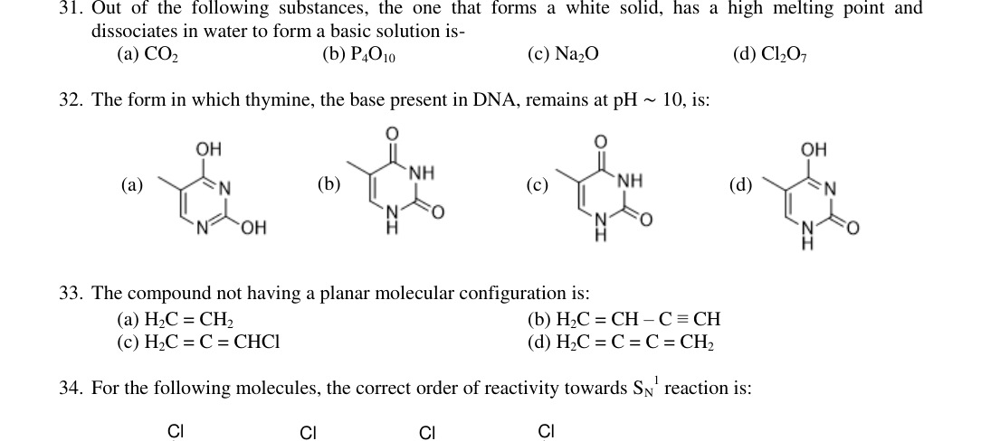
Four thymine structural forms at pH 10Topic: Modern-Quantum Physics, Thermodynamics Metodi: Physical Modeling, Symmetry Argument Competenze: Physical Reasoning, Diagrammatic Reasoning Fonte: Testo (PDF) — p.8
Problema 33
The compound not having a planar molecular configuration is:
(a) (b) (c) (d)
Topic: Modern-Quantum Physics, Electrostatics Metodi: Symmetry Argument, Physical Modeling Competenze: Physical Reasoning, Diagrammatic Reasoning Fonte: Testo (PDF) — p.8
Problema 34
For the following molecules, the correct order of reactivity towards reaction is:
(I) 1-chloro-1-methyl-4-methoxycyclohexane (II) 1-chloro-1-methyl-4-nitrocyclohexane (III) 1-chloro-1-methylcyclohexane (IV) 1-chloro-1-methyl-4-bromocyclohexane
(a) (III) > (II) > (I) > (IV) (b) (II) > (IV) > (III) > (I) (c) (I) > (III) > (IV) > (II) (d) (IV) > (II) > (III) > (I)
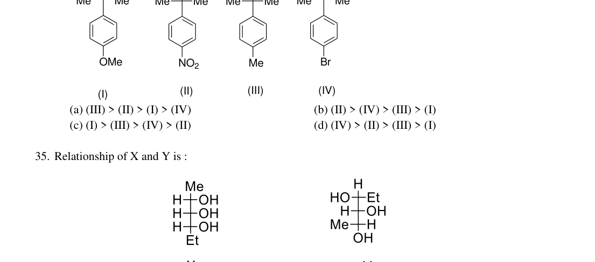
Four substituted cyclohexyl chloride structuresTopic: Modern-Quantum Physics, Electrostatics Metodi: Physical Modeling, Symmetry Argument Competenze: Physical Reasoning, Diagrammatic Reasoning Fonte: Testo (PDF) — p.8
Problema 35
Relationship of X and Y is:
(a) same molecules (b) enantiomers (c) diastereoisomers (d) positional isomers
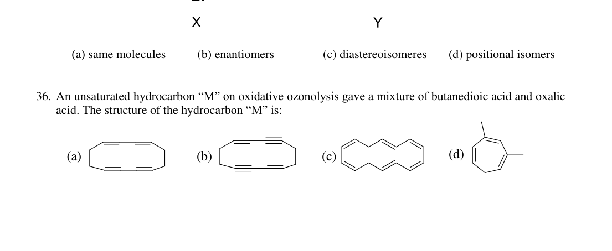
Stereoisomers X and Y structural formulasTopic: Modern-Quantum Physics, Electrostatics Metodi: Symmetry Argument, Physical Modeling Competenze: Physical Reasoning, Diagrammatic Reasoning Fonte: Testo (PDF) — p.8
Problema 36
An unsaturated hydrocarbon “M” on oxidative ozonolysis gave a mixture of butanedioic acid and oxalic acid. The structure of the hydrocarbon “M” is:
(a) [structure a] (b) [structure b] (c) [structure c] (d) [structure d]
Four unsaturated hydrocarbon candidates
Topic: Modern-Quantum Physics, Thermodynamics Metodi: Physical Modeling, Conservation Laws Competenze: Physical Reasoning, Diagrammatic Reasoning Fonte: Testo (PDF) — p.8
Problema 37
When 2-methylcyclopentanone is treated with but-3-en-2-one under alkaline condition followed by heating gives the major product ‘X’.
This ‘X’ is:
(a) [structure p] (b) [structure q] (c) [structure r/s] (d) [structure s]
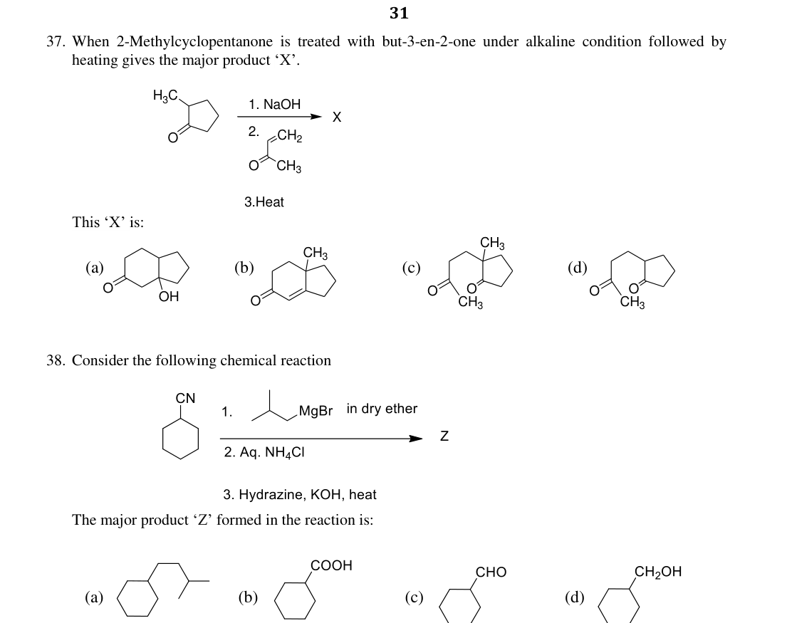
Aldol condensation product options p q r sTopic: Modern-Quantum Physics, Thermodynamics Metodi: Physical Modeling, Conservation Laws Competenze: Physical Reasoning, Diagrammatic Reasoning Fonte: Testo (PDF) — p.9
Problema 38
Consider the following chemical reaction and identify the major product ‘Z’ formed in the reaction:
(a) [structure a] (b) [structure b] (c) [structure c] (d) [structure d]
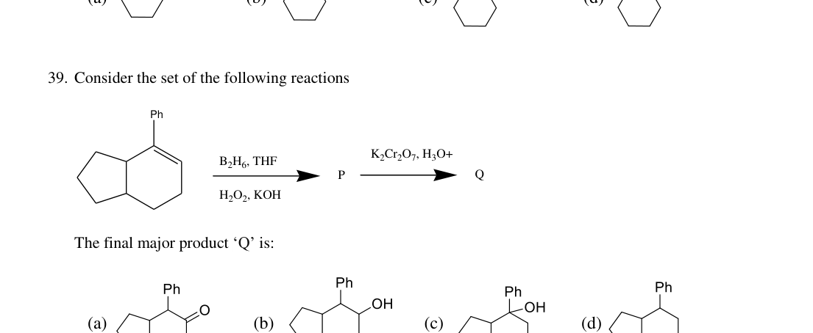
Organic reaction scheme and product Z optionsTopic: Modern-Quantum Physics, Thermodynamics Metodi: Physical Modeling, Conservation Laws Competenze: Physical Reasoning, Diagrammatic Reasoning Fonte: Testo (PDF) — p.9
Problema 39
Consider the set of the following reactions
The final major product ‘Q’ is:
(a) [structure a] (b) [structure b] (c) [structure c] (d) [structure d]
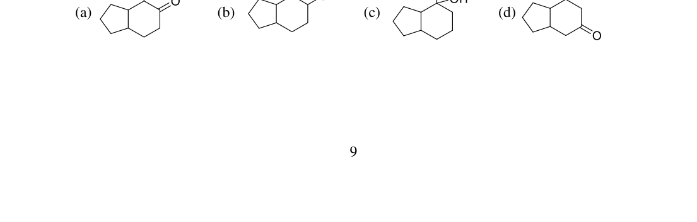
Hydroboration-oxidation product Q optionsTopic: Modern-Quantum Physics, Thermodynamics Metodi: Physical Modeling, Conservation Laws Competenze: Physical Reasoning, Diagrammatic Reasoning Fonte: Testo (PDF) — p.9
Problema 40
The following product ‘P’ given below is obtained by Aldol condensation of …
(a) 2 moles of dibenzyl ketone, (b) 1 mole of dibenzyl ketone, and 1 mole of acetone (c) 1 mole of dibenzyl ketone, and 1 mole of benzil (d) 2 moles of benzophenone,
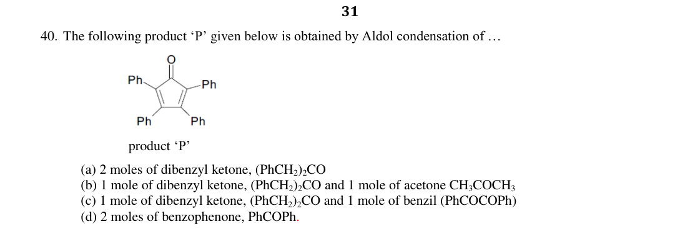
Aldol condensation product P structureTopic: Modern-Quantum Physics, Thermodynamics Metodi: Physical Modeling, Conservation Laws Competenze: Physical Reasoning, Diagrammatic Reasoning Fonte: Testo (PDF) — p.10
Problema 41
The structures of ‘P’ and ‘Q’ formed in the following reactions are:
(a) P = , Q = [specific structures] (b) P = hydroxylamine derivative, Q = amine (c) P = nitrile/oxazoline, Q = amine (d) P = nitrile, Q = oxazoline
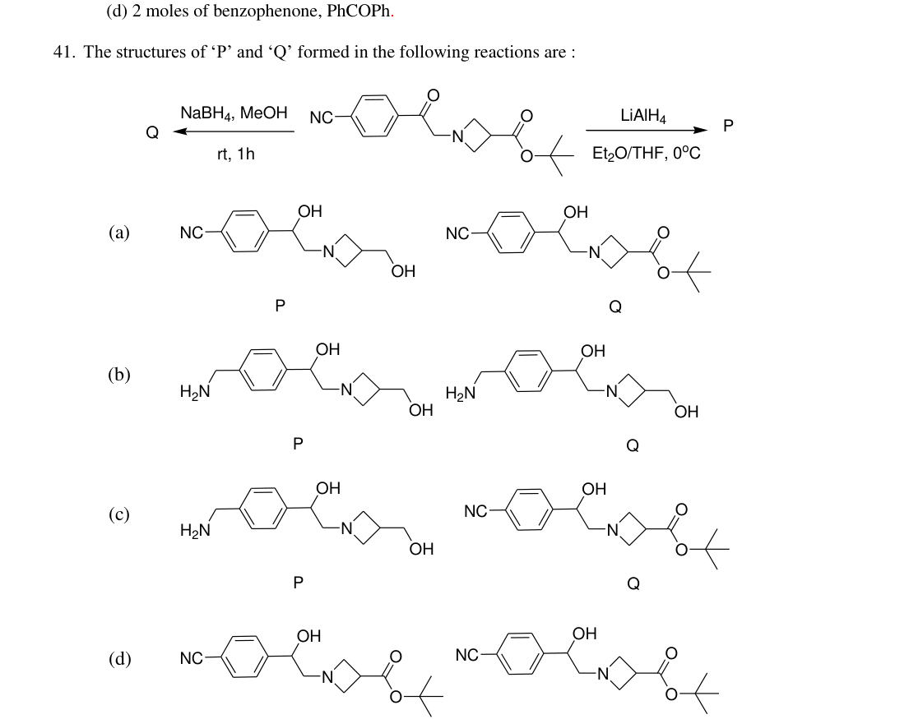
NaBH4 and LiAlH4 reduction products P and QTopic: Modern-Quantum Physics, Thermodynamics Metodi: Physical Modeling, Conservation Laws Competenze: Physical Reasoning, Diagrammatic Reasoning Fonte: Testo (PDF) — p.10
Problema 42
An amount of 0.45 g of an organic compound X containing C, H and N on combustion produces 1.1 g of and 0.3 g of water. The empirical formula of X is:
(a) (b) (c) (d)
Topic: Thermodynamics, Modern-Quantum Physics Metodi: Conservation Laws, Dimensional Analysis Competenze: Mathematical Modeling, Physical Reasoning Fonte: Testo (PDF) — p.10
Problema 43
Heptane-2,6-dione was treated with aqueous alkali and heated. The major product obtained is:
(a) 2,3-dimethylcyclohex-1-ene-2-one (b) 2,3-dimethylcyclohex-1-ene-3-one (c) 2,3-dimethylcyclohex-2-ene-1-one (d) 3-methylcyclohex-2-enone
Topic: Modern-Quantum Physics, Thermodynamics Metodi: Physical Modeling, Conservation Laws Competenze: Physical Reasoning, Diagrammatic Reasoning Fonte: Testo (PDF) — p.10
Problema 44
The number of chiral carbon(s) in Sphingomyelin, an important constituent of a class of lipids with the following structure is:
(a) 2 (b) 1 (c) 3 (d) 4
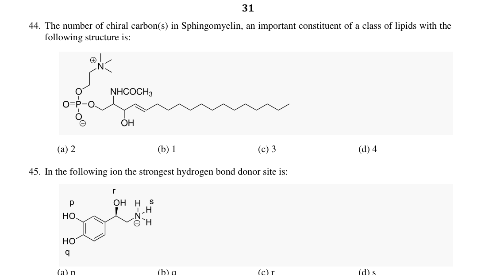
Sphingomyelin molecular structureTopic: Modern-Quantum Physics, Electrostatics Metodi: Symmetry Argument, Physical Modeling Competenze: Physical Reasoning, Diagrammatic Reasoning Fonte: Testo (PDF) — p.11
Problema 45
In the following ion the strongest hydrogen bond donor site is:
(a) p (b) q (c) r (d) s
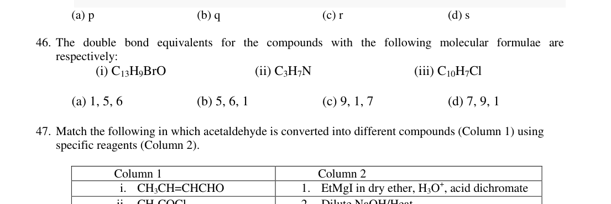
Ion with labeled sites p q r sTopic: Modern-Quantum Physics, Electrostatics Metodi: Physical Modeling, Symmetry Argument Competenze: Physical Reasoning, Diagrammatic Reasoning Fonte: Testo (PDF) — p.11
Problema 46
The double bond equivalents for the compounds with the following molecular formulae are respectively:
(i) (ii) (iii)
(a) 1, 5, 6 (b) 5, 6, 1 (c) 9, 1, 7 (d) 7, 9, 1
Topic: Modern-Quantum Physics, Thermodynamics Metodi: Dimensional Analysis, Physical Modeling Competenze: Mathematical Modeling, Physical Reasoning Fonte: Testo (PDF) — p.11
Problema 47
Match the following in which acetaldehyde is converted into different compounds (Column 1) using specific reagents (Column 2).
| Column 1 | Column 2 |
|---|---|
| i. | 1. EtMgI in dry ether, , acid dichromate |
| ii. | 2. Dilute NaOH/Heat |
| iii. | 3. Acid dichromate, |
| iv. | 4. , NaOH |
(a) i-1, ii-3, iii-4, iv-2 (b) i-4, ii-3, iii-2, iv-1 (c) i-2, ii-4, iii-1, iv-3 (d) i-2, ii-3, iii-4, iv-1
Topic: Modern-Quantum Physics, Thermodynamics Metodi: Physical Modeling, Conservation Laws Competenze: Physical Reasoning, Diagrammatic Reasoning Fonte: Testo (PDF) — p.11
Problema 48
The increasing order of stability of the following free radicals is:
(i) [aryl radical I] (ii) [aryl radical II] (iii) [aryl radical III] (iv) [aryl radical IV]
(a) iv < ii < iii < i (b) iii < i < ii < iv (c) iii < ii < i < iv (d) ii < i < iii < iv
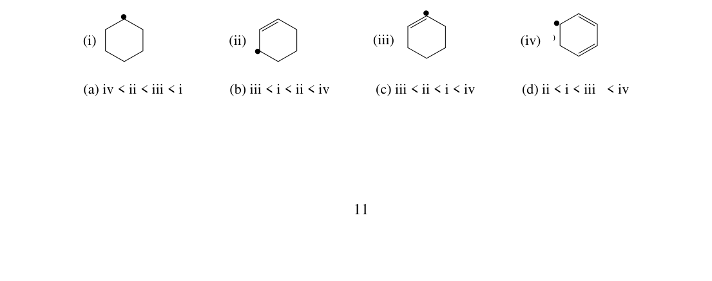
Four free radical structures i ii iii ivTopic: Modern-Quantum Physics, Electrostatics Metodi: Physical Modeling, Symmetry Argument Competenze: Physical Reasoning, Diagrammatic Reasoning Fonte: Testo (PDF) — p.11
Problema 49
A 2 g piece of “dry ice” is dropped in a 5 L glass vessel containing air at 1 atm and 25°C and the vessel is sealed. After some time, dry ice disappeared. (Assume that the temperature is kept constant throughout.)
Identify the correct statement(s).
(a) Partial pressure of oxygen increases with respect to its initial value in air. (b) Partial pressure of increases with respect to its initial value in air. (c) Total pressure of the vessel increases with respect to its initial value in air. (d) Disappearance of dry ice is due to the evaporation process.
Topic: Thermodynamics, Kinetic Theory, Fluid Mechanics Metodi: Ideal Gas Law, Physical Modeling, Conservation Laws Competenze: Physical Reasoning, Mathematical Modeling Fonte: Testo (PDF) — p.12
Problema 50
A thermodynamical process is represented by the cycle shown below in which 0.1 mol of a perfect gas undergoes the reversible cyclic process A → B → C → D → A
Given that independent of temperature.
All symbols have their usual meaning.
Identify the correct statement(s):
(a) (b) (c) (d) for a perfect gas
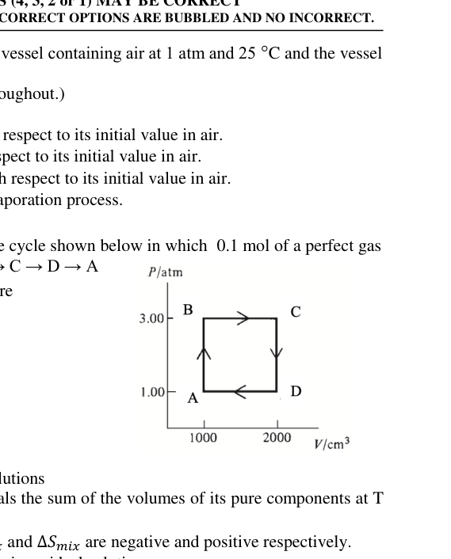
P-V diagram reversible cycle A B C DTopic: Thermodynamics, Kinetic Theory Metodi: First Law of Thermodynamics, Ideal Gas Law, Thermodynamic Cycle Analysis Competenze: Mathematical Modeling, Physical Reasoning Fonte: Testo (PDF) — p.12
Problema 51
Identify the correct statement(s) for the binary solutions:
(a) The volume of a solution at and equals the sum of the volumes of its pure components at and . (b) At constant and , the values of and are negative and positive respectively. (c) Inter-molecular interactions are negligible in an ideal solution. (d) The mixture of n-hexane and n-heptane form a nearly ideal solution.
Topic: Thermodynamics, Fluid Mechanics Metodi: First Law of Thermodynamics, Physical Modeling Competenze: Physical Reasoning, Mathematical Modeling Fonte: Testo (PDF) — p.12
Problema 52
The heat of combustion (kJ mol) of ethane, propane and butane are , , respectively. When 100 g of each undergo complete combustion. Which of the following statement(s) is/are correct?
(a) The heat generated by combustion of propane will be maximum. (b) The heat generated by combustion of butane will be minimum. (c) At constant temperature and pressure, the work done during the combustion of ethane is minimum. (d) At constant temperature and pressure, the work done during the combustion of butane is maximum.
Topic: Thermodynamics, Conservation of Energy Metodi: First Law of Thermodynamics, Conservation of Energy, Physical Modeling Competenze: Mathematical Modeling, Physical Reasoning Fonte: Testo (PDF) — p.12
Problema 53
pH titration curve of aqueous solution of simple aliphatic amino acid with general formula (where R = Alkyl group) against NaOH is represented below.
Identify the correct statement(s) pertaining to it:
(a) In aqueous solution, amino acid mainly exists as (b) At point ‘A’, (c) At point ‘B’ amino acid exists in zwitter ion form. (d) At point ‘C’,
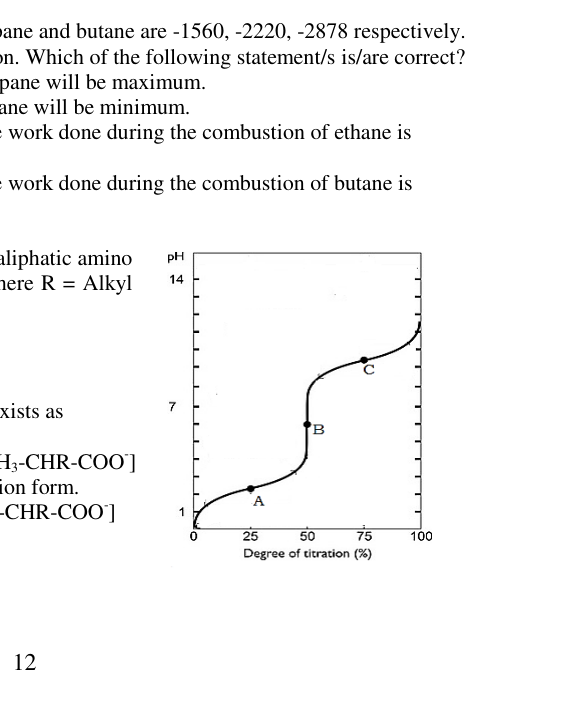
pH titration curve amino acid vs NaOHTopic: Thermodynamics, Kinetic Theory Metodi: Physical Modeling, Experimental Data Analysis Competenze: Graph Linearization, Physical Reasoning Fonte: Testo (PDF) — p.12
Problema 54
An aqueous solution of (X) is treated with certain reagents. Identify the incorrect statement(s).
(a) Addition of to the aqueous solution of X develops green colour. (b) X is treated with in acidic medium giving black precipitate soluble in hot aqueous KOH solution. (c) X on treatment with KI in weakly acidic medium gives white precipitate of liberating gas. (d) An aqueous solution of X when treated with solution gives white precipitate.
Topic: Electrostatics, Modern-Quantum Physics Metodi: Physical Modeling, Experimental Data Analysis Competenze: Physical Reasoning, Experimental Data Analysis Fonte: Testo (PDF) — p.13
Problema 55
Chlorine () gas can be prepared by the action of concentrated on a mixture of sodium chloride (NaCl) and manganese dioxide (). Identify the set(s) of correct reactions.
(a)
(b)
(c)
(d)
Topic: Thermodynamics, Electrostatics Metodi: Conservation Laws, Physical Modeling Competenze: Physical Reasoning, Mathematical Modeling Fonte: Testo (PDF) — p.13
Problema 56
The 18-valence electron rule asserts that transition metal compounds are thermodynamically stable when they have a total of 18 valence electrons on the central metal, which include the metal’s d electrons and the electrons provided by the ligands attached to the metal.
The 18-electron rule is obeyed by:
(a) (b) (c) (d)
Topic: Modern-Quantum Physics, Electrostatics Metodi: Bohr Model & Quantization, Physical Modeling Competenze: Physical Reasoning, Mathematical Modeling Fonte: Testo (PDF) — p.13
Problema 57
Identify the correct statement(s) from the following:
(a) The number of bridging carbonyl groups in is 2. (b) The number of lone pair(s) in is zero. (c) is not an example of borane. (d) The number of bonding and lone pairs of electrons in are 2 and 6, respectively.
Topic: Modern-Quantum Physics, Electrostatics Metodi: Symmetry Argument, Physical Modeling Competenze: Physical Reasoning, Diagrammatic Reasoning Fonte: Testo (PDF) — p.13
Problema 58
Consider the following reaction:
triethyl orthoformate acrylaldehyde ethyl formate
The correct statement(s) pertinent to the above mentioned reaction is/are:
(a) It is an example of acetal exchange reaction. (b) It is an example of rearrangement reaction. (c) Conventional reaction of acraldehyde and ethanol will produce better yield of the acetal. (d) Water produced in the reaction is taken out of the equilibrium by the hydrolysis of the orthoester.
Topic: Thermodynamics, Kinetic Theory Metodi: Physical Modeling, Conservation Laws Competenze: Physical Reasoning, Mathematical Modeling Fonte: Testo (PDF) — p.13
Problema 59
Tendency to undergo Cannizzaro reaction depends upon the electrophilic nature of the carbonyl group.
The four aldehydes considered are:
- pyrrole-2-aldehyde
- chloral ()
- p-N,N-dimethylaminobenzaldehyde
- thiophene-2-aldehyde
Identify the incorrect statement(s) from those listed below:
(a) Thiophene-2-aldehyde will undergo Cannizzaro reaction. (b) Only chloral will not undergo Cannizzaro reaction but others will follow. (c) Pyrrole-2-aldehyde, chloral and p-N,N-dimethylaminobenzaldehyde will not follow Cannizzaro reaction. (d) All the four molecules will undergo Cannizzaro reaction since no one contains any enolisable -hydrogen atom.
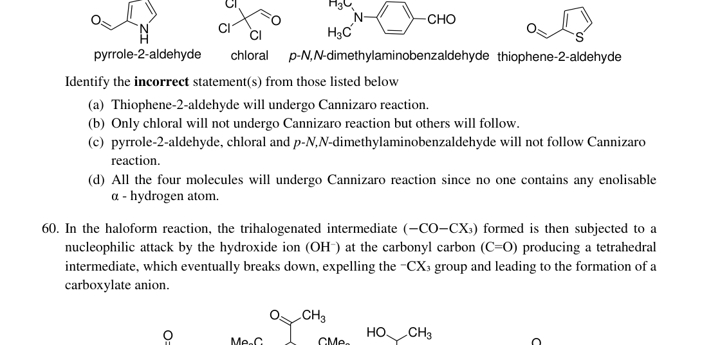
Four aldehyde structures for Cannizzaro analysisTopic: Modern-Quantum Physics, Thermodynamics Metodi: Physical Modeling, Symmetry Argument Competenze: Physical Reasoning, Diagrammatic Reasoning Fonte: Testo (PDF) — p.14
Problema 60
In the haloform reaction, the trihalogenated intermediate () formed is then subjected to a nucleophilic attack by the hydroxide ion () at the carbonyl carbon () producing a tetrahedral intermediate, which eventually breaks down, expelling the group and leading to the formation of a carboxylate anion.
The four compounds considered are:
Identify the correct statement(s) regarding iodoform reaction:
(a) ‘Q’, ‘R’ and ‘S’ will take part in iodoform reaction. (b) ‘P’, ‘R’ and ‘S’ will take part in iodoform reaction. (c) ‘P’ and ‘Q’ will not take part in iodoform reaction. (d) ‘Q’ will not take part in iodoform reaction.
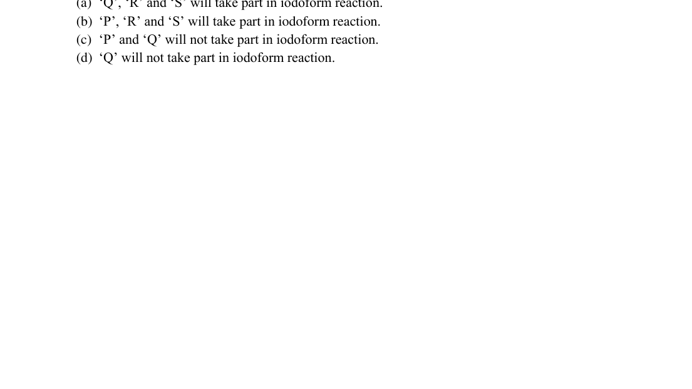
Four compounds P Q R S for iodoform reactionTopic: Modern-Quantum Physics, Thermodynamics Metodi: Physical Modeling, Conservation Laws Competenze: Physical Reasoning, Diagrammatic Reasoning Fonte: Testo (PDF) — p.14